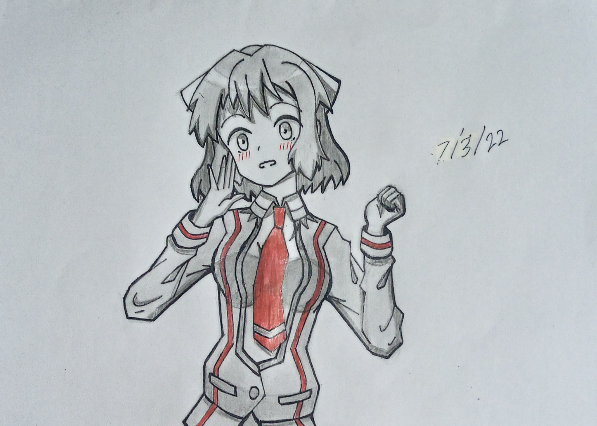
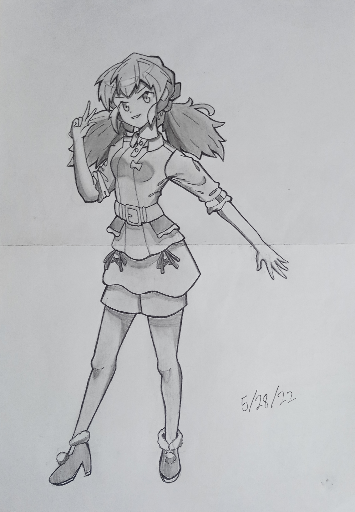

My Art Gallery
This section contains some of my traditional art works. I am a person who has interest in making art (though mostly anime style).
These pictures are organized in no particular order, but I just chose the ones I like.

